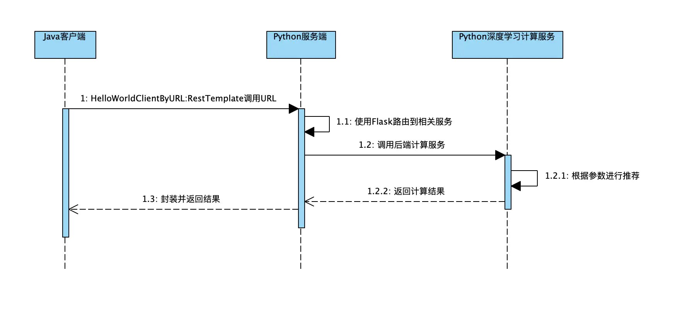

<!DOCTYPE html>


<html lang="zh-Hans">
  

    <head>
      <meta charset="utf-8" />
        
      <meta name="description" content="Technical output and problem solving record" />
      
      <meta
        name="viewport"
        content="width=device-width, initial-scale=1, maximum-scale=1"
      />
      <title>对Web Service的一些总结 |  Tunan`s Blog</title>
  <meta name="generator" content="hexo-theme-ayer">
      
      <link rel="shortcut icon" href="/favicon.ico" />
       
<link rel="stylesheet" href="/dist/main.css">

      <link
        rel="stylesheet"
        href="https://cdn.jsdelivr.net/gh/Shen-Yu/cdn/css/remixicon.min.css"
      />
      
<link rel="stylesheet" href="/css/custom.css">
 
      <script src="https://cdn.jsdelivr.net/npm/pace-js@1.0.2/pace.min.js"></script>
       
 

      <link
        rel="stylesheet"
        href="https://cdn.jsdelivr.net/npm/@sweetalert2/theme-bulma@5.0.1/bulma.min.css"
      />
      <script src="https://cdn.jsdelivr.net/npm/sweetalert2@11.0.19/dist/sweetalert2.min.js"></script>

      <!-- mermaid -->
      
      <style>
        .swal2-styled.swal2-confirm {
          font-size: 1.6rem;
        }
      </style>
    </head>
  </html>
</html>


<body>
  <div id="app">
    
      
    <main class="content on">
      <section class="outer">
  <article
  id="post-对Web-Service的一些总结"
  class="article article-type-post"
  itemscope
  itemprop="blogPost"
  data-scroll-reveal
>
  <div class="article-inner">
    
    <header class="article-header">
       
<h1 class="article-title sea-center" style="border-left:0" itemprop="name">
  对Web Service的一些总结
</h1>
 

      
    </header>
     
    <div class="article-meta">
      <a href="/2022/07/16/%E5%AF%B9Web-Service%E7%9A%84%E4%B8%80%E4%BA%9B%E6%80%BB%E7%BB%93/" class="article-date">
  <time datetime="2022-07-16T06:56:54.000Z" itemprop="datePublished">2022-07-16</time>
</a> 
  <div class="article-category">
    <a class="article-category-link" href="/categories/Web-Service/">Web Service</a>
  </div>
  
<div class="word_count">
    <span class="post-time">
        <span class="post-meta-item-icon">
            <i class="ri-quill-pen-line"></i>
            <span class="post-meta-item-text"> Word count:</span>
            <span class="post-count">2k</span>
        </span>
    </span>

    <span class="post-time">
        &nbsp; | &nbsp;
        <span class="post-meta-item-icon">
            <i class="ri-book-open-line"></i>
            <span class="post-meta-item-text"> Reading time≈</span>
            <span class="post-count">7 min</span>
        </span>
    </span>
</div>
 
    </div>
      
    <div class="tocbot"></div>


  
    <div class="article-entry" itemprop="articleBody">
       
  <h1 id="什么是WebService？"><a href="#什么是WebService？" class="headerlink" title="什么是WebService？"></a>什么是WebService？</h1><p><strong>一句话概括</strong>：WebService是一种跨编程语言、跨操作系统平台的远程调用技术<span id="more"></span></p>
<ul>
<li>远程调用技术：远程调用是指一台设备上的程序A可以调用另一台设备上的方法B。比如：银联提供给商场的pos刷卡系统，商场的pos机转账调用的转账方法的代码其实是跑在银行服务器上的。再比如，amazon，天气预报系统，淘宝网，校内网，百度等把自己的系统服务以WebService服务的形式暴露出来，让第三方网站和程序可以调用这些服务功能，这样扩展了自己系统的市场占有率。</li>
<li>跨编程语言：是指服务端、客户端程序的编程语言可以不同</li>
<li>跨操作系统平台：是指服务端、客户端可在不同的操作系统上运行</li>
<li>从表面上看，WebService是指一个应用程序向外界暴露了一个能通过Web调用的API接口，我们把调用这个WebService的应用程序称作客户端，把提供这个WebService的应用程序称作服务端。</li>
<li>从深层上看，WebService是建立可互操作的分布式应用程序的新平台，是一个平台，是一套标准。它定义了应用程序如何通过Web实现互操作性，通过WebService标准对服务进行查询和访问。</li>
</ul>
<h1 id="Java的RestTemplate"><a href="#Java的RestTemplate" class="headerlink" title="Java的RestTemplate"></a>Java的RestTemplate</h1><p>传统情况下在java代码里访问restful服务，一般使用<code>Apache</code>的<code>HttpClient</code>。不过此种方法使用起来太过繁琐，需要进行各种序列化和反序列化。spring提供了一种简单便捷的模板类来进行操作，这就是<code>RestTemplate</code>。</p>
<p>常用方法：</p>
<ul>
<li>delete() 在特定的URL上对资源执行HTTP DELETE操作</li>
<li>exchange()  在URL上执行特定的HTTP方法，返回包含对象的ResponseEntity，这个对象是从响应体中映射得到的</li>
<li>execute() 在URL上执行特定的HTTP方法，返回一个从响应体映射得到的对象</li>
<li>getForEntity() 发送一个HTTP GET请求，返回的ResponseEntity包含了响应体所映射成的对象</li>
<li>getForObject() 发送一个HTTP GET请求，返回的请求体将映射为一个对象</li>
<li>postForEntity()  POST 数据到一个URL，返回包含一个对象的ResponseEntity，这个对象是从响应体中映射得到的</li>
<li>postForObject() POST 数据到一个URL，返回根据响应体匹配形成的对象</li>
<li>headForHeaders() 发送HTTP HEAD请求，返回包含特定资源URL的HTTP头</li>
<li>optionsForAllow() 发送HTTP OPTIONS请求，返回对特定URL的Allow头信息</li>
<li>postForLocation() POST 数据到一个URL，返回新创建资源的URL</li>
<li>put() PUT 资源到特定的URL</li>
</ul>
<p>下面是代码示例：</p>
<pre><code class="java">public class HelloWorldClientByURL &#123;
    public static void main(String[] args) &#123;
        RestTemplate restTemplate = new RestTemplate();
        String url = &quot;http://127.0.0.1:5000/hello/world&quot;;
        ResponseEntity&lt;String&gt; responseEntity = restTemplate.getForEntity(url, String.class);
        String result = responseEntity.getBody();
        System.out.println(result);
    &#125;
&#125;
</code></pre>
<h1 id="Python的flask"><a href="#Python的flask" class="headerlink" title="Python的flask"></a>Python的flask</h1><p>Flask诞生于2010年，现在已经是一个用python语言基于Werkzeug工具箱编写的轻量级web开发框架，它主要面向需求简单，项目周期短的小应用。</p>
<p></p>
<p>Flask本身相当于一个内核，其他几乎所有的功能都要用到扩展，都需要用第三方的扩展来实现。用 extension 增加其他功能。Flask没有默认使用的数据库、窗体验证工具。你可以选择MySQL，也可以用NoSQL。Python最出名的框架要数Django，虽然Flask不是最出名的框架，但是Flask应该算是最灵活的框架之一，这也是Flask受到广大开发者喜爱的原因。</p>
<p>下面是代码的简单示例：</p>
<p><strong>server.py:</strong></p>
<pre><code class="python">from flask import Flask
 
app = Flask(__name__)
 
@app.route(&#39;/&#39;)
def hello_world():
    return &#39;Hello World!&#39;
 
if __name__ == &#39;__main__&#39;:
    app.run();
</code></pre>
<p>运行<strong>server.py</strong></p>
<pre><code class="bash">$ python3 server.py 
  Running on http://127.0.0.1:5000/
</code></pre>
<p>此时打开浏览器访问<code>http://127.0.0.1:5000/</code>，浏览页面上将出现<code>Hello World!</code>。</p>
<p>终端里显式如下信息</p>
<pre><code class="bash">127.0.0.1 - - [16/May/2022 10:29:08] &quot;GET / HTTP/1.1&quot; 200 -
</code></pre>
<p>变量app是一个Flask实例，当客户端访问<code>/</code>时，将响应<code>hello_world()</code>函数返回的内容。注意，这不是返回<code>Hello World!</code>这么简单，<code>Hello World!</code>只是HTTP响应报文的实体部分，状态码等信息既可以由Flask自动处理，也可以通过编程来制定。</p>
<h1 id="初始跨语言服务调用"><a href="#初始跨语言服务调用" class="headerlink" title="初始跨语言服务调用"></a>初始跨语言服务调用</h1><p>通过介绍完python的便携式路由框架和Java的RestTemplate模板类，可以完成一个简单的服务调用了</p>
<p></p>
<ul>
<li>首先Python编写路由，将请求封装为Web服务，然后Java客户端根据路由，发送请求给服务端，服务端收到请求以后执行计算服务并返回结果，Python将返回的计算结果封装为JSON回传给Java客户端，Java客户端对结果进行解析即可。</li>
<li>采用Web服务进行调用，后端对应用的处理线程采用同步阻塞的模型，阻塞的时间取决对方I/O处理的速度和网络I/O传输的速度，两种不同代码之间通过HTTP请求或者JSON封装进行交互，效率较低。</li>
</ul>
<h1 id="Facebook的Thrift"><a href="#Facebook的Thrift" class="headerlink" title="Facebook的Thrift"></a>Facebook的Thrift</h1><p>Thrift是Facebook于2007年开发的跨语言的rpc服框架，提供多语言的编译功能，并提供多种服务器工作模式；用户通过Thrift的IDL（接口定义语言）来描述接口函数及数据类型，然后通过Thrift的编译环境生成各种语言类型的接口文件，用户可以根据自己的需要采用不同的语言开发客户端代码和服务器端代码。</p>
<p>例如，想开发一个快速计算的RPC服务，它主要通过接口函数getInt对外提供服务，这个RPC服务的getInt函数使用用户传入的参数，经过复杂的计算，计算出一个整形值返回给用户；服务器端使用java语言开发，而调用客户端可以是java、c、python等语言开发的程序，在这种应用场景下，我们只需要使用Thrift的IDL描述一下getInt函数（以.thrift为后缀的文件），然后使用Thrift的多语言编译功能，将这个IDL文件编译成C、java、python几种语言对应的“特定语言接口文件”（每种语言只需要一条简单的命令即可编译完成），这样拿到对应语言的“特定语言接口文件”之后，就可以开发客户端和服务器端的代码了，开发过程中只要接口不变，客户端和服务器端的开发可以独立的进行。</p>
<p>Thrift 本身也是一个序列化协议，它序列化后体积小、速度快且支持多种语言和数据类型，对数据字段的增删具有较强的兼容性。</p>
<h1 id="谷歌的gRPC"><a href="#谷歌的gRPC" class="headerlink" title="谷歌的gRPC"></a>谷歌的gRPC</h1><p>gRPC，则是RPC的一种，它是免费且开源的，由谷歌出品。使用gRPC，我们只需要定义好每个API的Request和Response，剩下的gRPC这个框架会帮我们自动搞定。</p>
<p>gRPC的典型特征就是使用protobuf（全称protocol buffers）作为其<strong>接口定义语言</strong>（Interface Definition Language，缩写IDL），同时底层的消息交换格式也是使用protobuf。</p>
<p>这是官方文档的一张图，通过这张图，我们可以大致了解下gRPC的通信流程：</p>
<p>1.gRPC通信的第一步是定义IDL，即我们的接口文档（后缀为.proto）</p>
<p>2.第二步是编译proto文件，得到存根（stub）文件，即上图深绿色部分。</p>
<p>3.第三步是服务端（gRPC Server）实现第一步定义的接口并启动，这些接口的定义在存根文件里面</p>
<p>4.最后一步是客户端借助存根文件调用服务端的函数，虽然客户端调用的函数是由服务端实现的，但是调用起来就像是<strong>本地函数</strong>一样。</p>
<p>以上就是gRPC的基本流程，从图中还可以看出，由于我们的proto文件的编译支持多种语言（Go、Java、Python等），所以gRPC也是<strong>跨语言</strong>的。</p>
 
      <!-- reward -->
      
    </div>
    

    <!-- copyright -->
    
    <div class="declare">
      <ul class="post-copyright">
        <li>
          <i class="ri-copyright-line"></i>
          <strong>Copyright： </strong>
          
          Copyright is owned by the author. For commercial reprints, please contact the author for authorization. For non-commercial reprints, please indicate the source.
          
        </li>
      </ul>
    </div>
    
    <footer class="article-footer">
       
<div class="share-btn">
      <span class="share-sns share-outer">
        <i class="ri-share-forward-line"></i>
        分享
      </span>
      <div class="share-wrap">
        <i class="arrow"></i>
        <div class="share-icons">
          
          <a class="weibo share-sns" href="javascript:;" data-type="weibo">
            <i class="ri-weibo-fill"></i>
          </a>
          <a class="weixin share-sns wxFab" href="javascript:;" data-type="weixin">
            <i class="ri-wechat-fill"></i>
          </a>
          <a class="qq share-sns" href="javascript:;" data-type="qq">
            <i class="ri-qq-fill"></i>
          </a>
          <a class="douban share-sns" href="javascript:;" data-type="douban">
            <i class="ri-douban-line"></i>
          </a>
          <!-- <a class="qzone share-sns" href="javascript:;" data-type="qzone">
            <i class="icon icon-qzone"></i>
          </a> -->
          
          <a class="facebook share-sns" href="javascript:;" data-type="facebook">
            <i class="ri-facebook-circle-fill"></i>
          </a>
          <a class="twitter share-sns" href="javascript:;" data-type="twitter">
            <i class="ri-twitter-fill"></i>
          </a>
          <a class="google share-sns" href="javascript:;" data-type="google">
            <i class="ri-google-fill"></i>
          </a>
        </div>
      </div>
</div>

<div class="wx-share-modal">
    <a class="modal-close" href="javascript:;"><i class="ri-close-circle-line"></i></a>
    <p>扫一扫，分享到微信</p>
    <div class="wx-qrcode">
      
    </div>
</div>

<div id="share-mask"></div>  
  <ul class="article-tag-list" itemprop="keywords"><li class="article-tag-list-item"><a class="article-tag-list-link" href="/tags/Web-Service/" rel="tag">Web Service</a></li></ul>

    </footer>
  </div>

   
  <nav class="article-nav">
    
      <a href="/2022/07/22/WebService%E7%BB%84%E4%BB%B601%E2%80%94%E2%80%94Thrift/" class="article-nav-link">
        <strong class="article-nav-caption">上一篇</strong>
        <div class="article-nav-title">
          
            WebService组件——Thrift用法总结
          
        </div>
      </a>
    
    
      <a href="/2022/07/12/%E5%85%B3%E4%BA%8EMybatis%E6%8C%81%E4%B9%85%E5%8C%96%E7%9A%84%E6%BC%94%E8%BF%9B%E8%BF%87%E7%A8%8B%E9%98%90%E8%BF%B0/" class="article-nav-link">
        <strong class="article-nav-caption">下一篇</strong>
        <div class="article-nav-title">关于Mybatis持久化的演进过程阐述</div>
      </a>
    
  </nav>

   
<!-- valine评论 -->
<div id="vcomments-box">
  <div id="vcomments"></div>
</div>
<script src="//cdn1.lncld.net/static/js/3.0.4/av-min.js"></script>
<script src="https://cdn.jsdelivr.net/npm/valine@1.4.14/dist/Valine.min.js"></script>
<script>
  new Valine({
    el: "#vcomments",
    app_id: "",
    app_key: "",
    path: window.location.pathname,
    avatar: "monsterid",
    placeholder: "给我的文章加点评论吧~",
    recordIP: true,
  });
  const infoEle = document.querySelector("#vcomments .info");
  if (infoEle && infoEle.childNodes && infoEle.childNodes.length > 0) {
    infoEle.childNodes.forEach(function (item) {
      item.parentNode.removeChild(item);
    });
  }
</script>
<style>
  #vcomments-box {
    padding: 5px 30px;
  }

  @media screen and (max-width: 800px) {
    #vcomments-box {
      padding: 5px 0px;
    }
  }

  #vcomments-box #vcomments {
    background-color: #fff;
  }

  .v .vlist .vcard .vh {
    padding-right: 20px;
  }

  .v .vlist .vcard {
    padding-left: 10px;
  }
</style>

 
   
     
</article>

</section>
      <footer class="footer">
  <div class="outer">
    <ul>
      <li>
        Copyrights &copy;
        2018-2022
        <i class="ri-heart-fill heart_icon"></i> Tunan
      </li>
    </ul>
    <ul>
      <li>
        
      </li>
    </ul>
    <ul>
      <li>
        
        
        <span>
  <span><i class="ri-user-3-fill"></i>Visitors:<span id="busuanzi_value_site_uv"></span></span>
  <span class="division">|</span>
  <span><i class="ri-eye-fill"></i>Views:<span id="busuanzi_value_page_pv"></span></span>
</span>
        
      </li>
    </ul>
    <ul>
      
    </ul>
    <ul>
      
    </ul>
    <ul>
      <li>
        <!-- cnzz统计 -->
        
        <script type="text/javascript" src='https://s9.cnzz.com/z_stat.php?id=1278069914&amp;web_id=1278069914'></script>
        
      </li>
    </ul>
  </div>
</footer>    
    </main>
    <div class="float_btns">
      <div class="totop" id="totop">
  <i class="ri-arrow-up-line"></i>
</div>

<div class="todark" id="todark">
  <i class="ri-moon-line"></i>
</div>

    </div>
    <aside class="sidebar on">
      <button class="navbar-toggle"></button>
<nav class="navbar">
  
  <div class="logo">
    <a href="/"></a>
  </div>
  
  <ul class="nav nav-main">
    
    <li class="nav-item">
      <a class="nav-item-link" href="/">主页</a>
    </li>
    
    <li class="nav-item">
      <a class="nav-item-link" href="/archives">归档</a>
    </li>
    
    <li class="nav-item">
      <a class="nav-item-link" href="/categories">分类</a>
    </li>
    
    <li class="nav-item">
      <a class="nav-item-link" href="/tags">标签</a>
    </li>
    
    <li class="nav-item">
      <a class="nav-item-link" href="/tags/share">分享</a>
    </li>
    
    <li class="nav-item">
      <a class="nav-item-link" target="_blank" rel="noopener" href="https://blog.csdn.net/North_City_">CSDN</a>
    </li>
    
  </ul>
</nav>
<nav class="navbar navbar-bottom">
  <ul class="nav">
    <li class="nav-item">
      
      <a class="nav-item-link nav-item-search"  title="Search">
        <i class="ri-search-line"></i>
      </a>
      
      
      <a class="nav-item-link" target="_blank" href="/atom.xml" title="RSS Feed">
        <i class="ri-rss-line"></i>
      </a>
      
    </li>
  </ul>
</nav>
<div class="search-form-wrap">
  <div class="local-search local-search-plugin">
  <input type="search" id="local-search-input" class="local-search-input" placeholder="Search...">
  <div id="local-search-result" class="local-search-result"></div>
</div>
</div>
    </aside>
    <div id="mask"></div>

<!-- #reward -->
<div id="reward">
  <span class="close"><i class="ri-close-line"></i></span>
  <p class="reward-p"><i class="ri-cup-line"></i>请我喝杯咖啡吧~</p>
  <div class="reward-box">
    
    <div class="reward-item">
      
      <span class="reward-type">支付宝</span>
    </div>
    
    
    <div class="reward-item">
      
      <span class="reward-type">微信</span>
    </div>
    
  </div>
</div>
    
<script src="/js/jquery-3.6.0.min.js"></script>
 
<script src="/js/lazyload.min.js"></script>

<!-- Tocbot -->
 
<script src="/js/tocbot.min.js"></script>

<script>
  tocbot.init({
    tocSelector: ".tocbot",
    contentSelector: ".article-entry",
    headingSelector: "h1, h2, h3, h4, h5, h6",
    hasInnerContainers: true,
    scrollSmooth: true,
    scrollContainer: "main",
    positionFixedSelector: ".tocbot",
    positionFixedClass: "is-position-fixed",
    fixedSidebarOffset: "auto",
  });
</script>

<script src="https://cdn.jsdelivr.net/npm/jquery-modal@0.9.2/jquery.modal.min.js"></script>
<link
  rel="stylesheet"
  href="https://cdn.jsdelivr.net/npm/jquery-modal@0.9.2/jquery.modal.min.css"
/>
<script src="https://cdn.jsdelivr.net/npm/justifiedGallery@3.7.0/dist/js/jquery.justifiedGallery.min.js"></script>

<script src="/dist/main.js"></script>

<!-- ImageViewer -->
 <!-- Root element of PhotoSwipe. Must have class pswp. -->
<div class="pswp" tabindex="-1" role="dialog" aria-hidden="true">

    <!-- Background of PhotoSwipe. 
         It's a separate element as animating opacity is faster than rgba(). -->
    <div class="pswp__bg"></div>

    <!-- Slides wrapper with overflow:hidden. -->
    <div class="pswp__scroll-wrap">

        <!-- Container that holds slides. 
            PhotoSwipe keeps only 3 of them in the DOM to save memory.
            Don't modify these 3 pswp__item elements, data is added later on. -->
        <div class="pswp__container">
            <div class="pswp__item"></div>
            <div class="pswp__item"></div>
            <div class="pswp__item"></div>
        </div>

        <!-- Default (PhotoSwipeUI_Default) interface on top of sliding area. Can be changed. -->
        <div class="pswp__ui pswp__ui--hidden">

            <div class="pswp__top-bar">

                <!--  Controls are self-explanatory. Order can be changed. -->

                <div class="pswp__counter"></div>

                <button class="pswp__button pswp__button--close" title="Close (Esc)"></button>

                <button class="pswp__button pswp__button--share" style="display:none" title="Share"></button>

                <button class="pswp__button pswp__button--fs" title="Toggle fullscreen"></button>

                <button class="pswp__button pswp__button--zoom" title="Zoom in/out"></button>

                <!-- Preloader demo http://codepen.io/dimsemenov/pen/yyBWoR -->
                <!-- element will get class pswp__preloader--active when preloader is running -->
                <div class="pswp__preloader">
                    <div class="pswp__preloader__icn">
                        <div class="pswp__preloader__cut">
                            <div class="pswp__preloader__donut"></div>
                        </div>
                    </div>
                </div>
            </div>

            <div class="pswp__share-modal pswp__share-modal--hidden pswp__single-tap">
                <div class="pswp__share-tooltip"></div>
            </div>

            <button class="pswp__button pswp__button--arrow--left" title="Previous (arrow left)">
            </button>

            <button class="pswp__button pswp__button--arrow--right" title="Next (arrow right)">
            </button>

            <div class="pswp__caption">
                <div class="pswp__caption__center"></div>
            </div>

        </div>

    </div>

</div>

<link rel="stylesheet" href="https://cdn.jsdelivr.net/npm/photoswipe@4.1.3/dist/photoswipe.min.css">
<link rel="stylesheet" href="https://cdn.jsdelivr.net/npm/photoswipe@4.1.3/dist/default-skin/default-skin.min.css">
<script src="https://cdn.jsdelivr.net/npm/photoswipe@4.1.3/dist/photoswipe.min.js"></script>
<script src="https://cdn.jsdelivr.net/npm/photoswipe@4.1.3/dist/photoswipe-ui-default.min.js"></script>

<script>
    function viewer_init() {
        let pswpElement = document.querySelectorAll('.pswp')[0];
        let $imgArr = document.querySelectorAll(('.article-entry img:not(.reward-img)'))

        $imgArr.forEach(($em, i) => {
            $em.onclick = () => {
                // slider展开状态
                // todo: 这样不好，后面改成状态
                if (document.querySelector('.left-col.show')) return
                let items = []
                $imgArr.forEach(($em2, i2) => {
                    let img = $em2.getAttribute('data-idx', i2)
                    let src = $em2.getAttribute('data-target') || $em2.getAttribute('src')
                    let title = $em2.getAttribute('alt')
                    // 获得原图尺寸
                    const image = new Image()
                    image.src = src
                    items.push({
                        src: src,
                        w: image.width || $em2.width,
                        h: image.height || $em2.height,
                        title: title
                    })
                })
                var gallery = new PhotoSwipe(pswpElement, PhotoSwipeUI_Default, items, {
                    index: parseInt(i)
                });
                gallery.init()
            }
        })
    }
    viewer_init()
</script> 
<!-- MathJax -->

<!-- Katex -->

<!-- busuanzi  -->
 
<script src="/js/busuanzi-2.3.pure.min.js"></script>
 
<!-- ClickLove -->

<!-- ClickBoom1 -->

<!-- ClickBoom2 -->

<!-- CodeCopy -->
 
<link rel="stylesheet" href="/css/clipboard.css">
 <script src="https://cdn.jsdelivr.net/npm/clipboard@2/dist/clipboard.min.js"></script>
<script>
  function wait(callback, seconds) {
    var timelag = null;
    timelag = window.setTimeout(callback, seconds);
  }
  !function (e, t, a) {
    var initCopyCode = function(){
      var copyHtml = '';
      copyHtml += '<button class="btn-copy" data-clipboard-snippet="">';
      copyHtml += '<i class="ri-file-copy-2-line"></i><span>COPY</span>';
      copyHtml += '</button>';
      $(".highlight .code pre").before(copyHtml);
      $(".article pre code").before(copyHtml);
      var clipboard = new ClipboardJS('.btn-copy', {
        target: function(trigger) {
          return trigger.nextElementSibling;
        }
      });
      clipboard.on('success', function(e) {
        let $btn = $(e.trigger);
        $btn.addClass('copied');
        let $icon = $($btn.find('i'));
        $icon.removeClass('ri-file-copy-2-line');
        $icon.addClass('ri-checkbox-circle-line');
        let $span = $($btn.find('span'));
        $span[0].innerText = 'COPIED';
        
        wait(function () { // 等待两秒钟后恢复
          $icon.removeClass('ri-checkbox-circle-line');
          $icon.addClass('ri-file-copy-2-line');
          $span[0].innerText = 'COPY';
        }, 2000);
      });
      clipboard.on('error', function(e) {
        e.clearSelection();
        let $btn = $(e.trigger);
        $btn.addClass('copy-failed');
        let $icon = $($btn.find('i'));
        $icon.removeClass('ri-file-copy-2-line');
        $icon.addClass('ri-time-line');
        let $span = $($btn.find('span'));
        $span[0].innerText = 'COPY FAILED';
        
        wait(function () { // 等待两秒钟后恢复
          $icon.removeClass('ri-time-line');
          $icon.addClass('ri-file-copy-2-line');
          $span[0].innerText = 'COPY';
        }, 2000);
      });
    }
    initCopyCode();
  }(window, document);
</script>
 
<!-- CanvasBackground -->

<script>
  if (window.mermaid) {
    mermaid.initialize({ theme: "forest" });
  }
</script>


    
    

  </div>
</body>

</html>